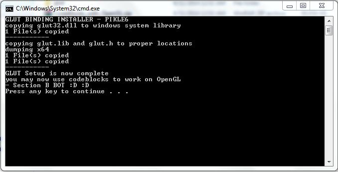
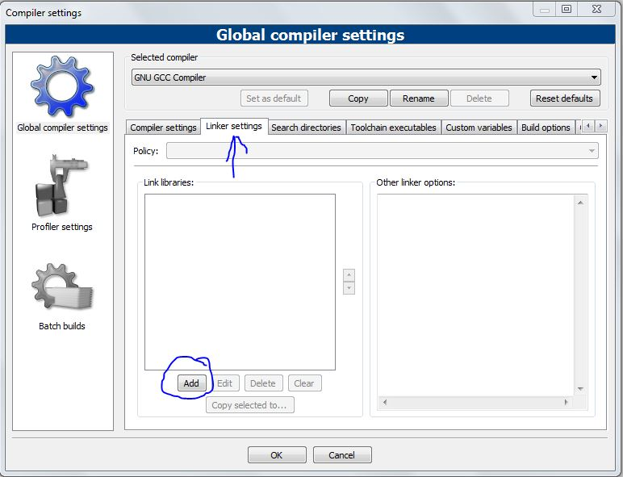
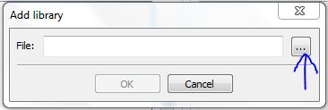
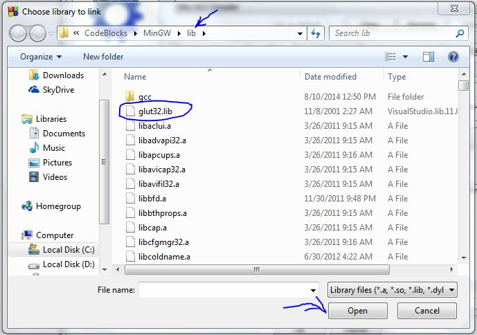
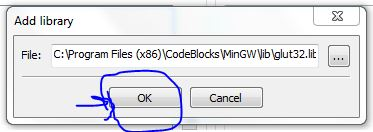
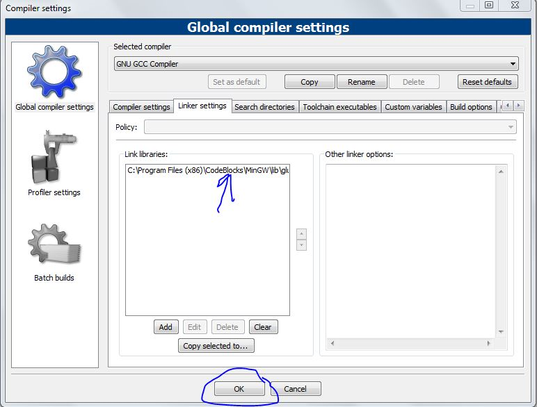

Codeblocks install guide for both DAA Lab and CG Lab
For WINDOWS x86 and x64 bit ONLY
0> Download this - 100MB might take upto 10 minutes || ONLY GLUT BINDING INSTALL - DOWNLOAD THIS
1> Once done extract the archive into a folder
2> run codeblocks-13.12mingw-setup.exe
3> Then follow all the on screen instructions to complete the CodeBlocks Installation
4> once done run glut_bindings_install.bat
5> click Yes at prompt
6> the file shall prompt you once completed - press enter then

7> Open CodeBlocks -> in the top menu goto -> settings -> Compiler...
8> Go To Linker Settings and click add. Refer image below.

9> Click ... to browse for glut32.lib file Refer image below.

10> Location to glut32.lib -> 32bit - C:\Program Files\CodeBlocks\MinGW\lib
Location to glut32.lib -> 64bit - C:\Program Files (x86)\CodeBlocks\MinGW\lib
11> Refer pictures below



12> VERY IMPORTANT - In Windows you must write this line of code - #include <windows.h>
7> Thats all open codeblocks and create a new OpenGL project or just code away your algorithms in console project mode. :D
--by-pikle6
---------SOURCE CODE FOR glut_bindings_install.bat---------
@echo off
:: BatchGotAdmin
:-------------------------------------
REM --> Check for permissions
>nul 2>&1 "%SYSTEMROOT%\system32\cacls.exe" "%SYSTEMROOT%\system32\config\system"
REM --> If error flag set, we do not have admin.
if '%errorlevel%' NEQ '0' (
echo Requesting administrative privileges...
goto UACPrompt
) else ( goto gotAdmin )
:UACPrompt
echo Set UAC = CreateObject^("Shell.Application"^) > "%temp%\getadmin.vbs"
echo UAC.ShellExecute "%~s0", "", "", "runas", 1 >> "%temp%\getadmin.vbs"
"%temp%\getadmin.vbs"
exit /B
:gotAdmin
if exist "%temp%\getadmin.vbs" ( del "%temp%\getadmin.vbs" )
pushd "%CD%"
CD /D "%~dp0"
:--------------------------------------
echo GLUT BINDING INSTALLER - PIKLE6
echo copying glut32.dll to windows system library
xcopy "glut\glut32.dll" %SYSTEMROOT%\system /Q /Y
echo -----------
echo copying glut.lib and glut.h to proper locations
IF NOT EXIST "%ProgramFiles(x86)%\CodeBlocks" GOTO dump
goto dump64
:dump64
echo dumping x64
xcopy "glut\glut.h" "%ProgramFiles(x86)%\CodeBlocks\MinGW\include\GL" /Q /Y
xcopy "glut\glut32.lib" "%ProgramFiles(x86)%\CodeBlocks\MinGW\lib" /Q /Y
goto end
:dump
echo dumping x86
xcopy "glut\glut.h" "%ProgramFiles%\CodeBlocks\MinGW\include\GL" /Q /Y
xcopy "glut\glut32.lib" "%ProgramFiles%\CodeBlocks\MinGW\lib" /Q /Y
goto end
:end
echo -----------
echo GLUT Setup is now complete
echo you may now use codeblocks to work on OpenGL
echo - Section B BOT :D :D
pause